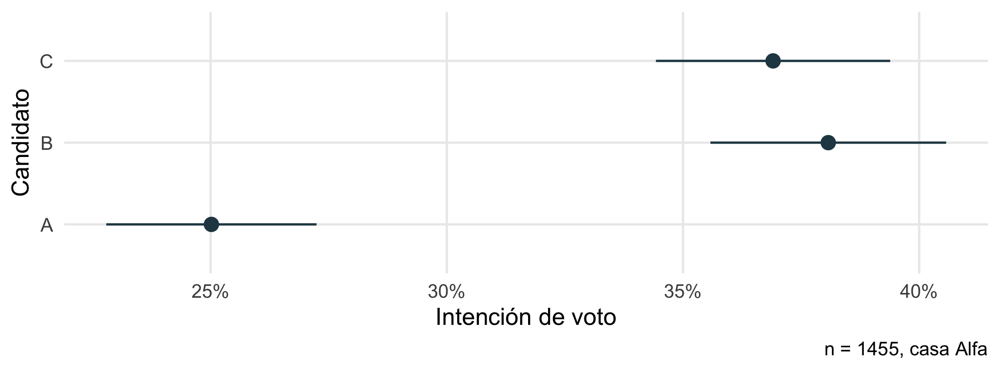
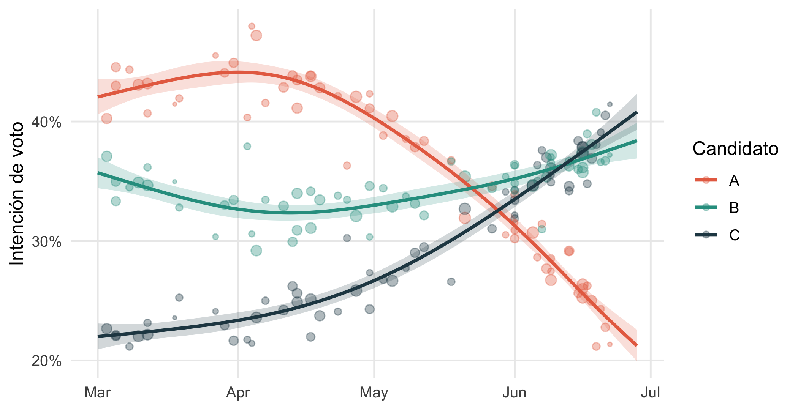
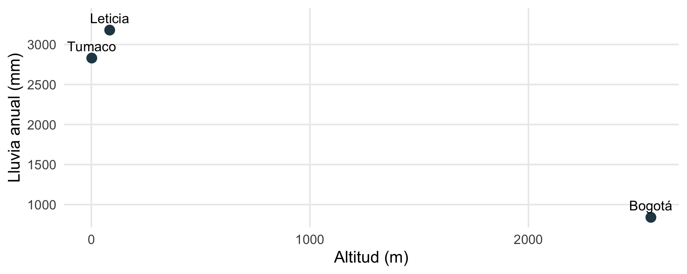
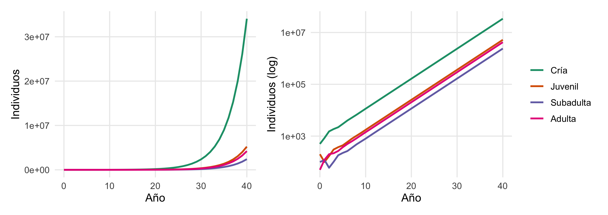
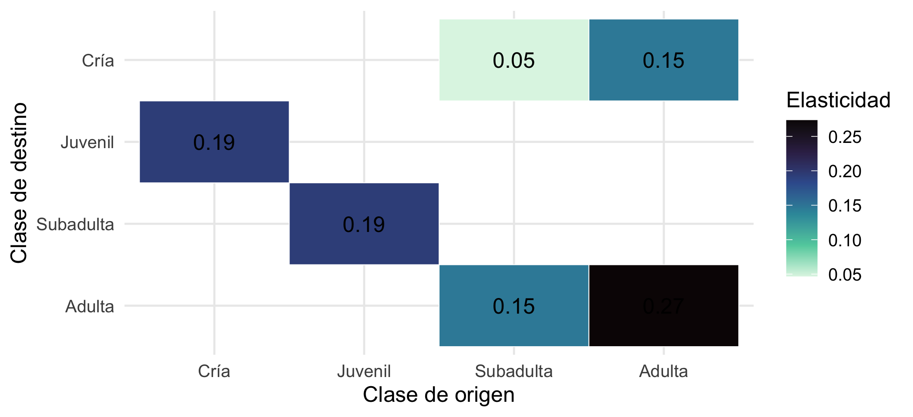

library(tidyverse)
library(mgcv)
library(rvest)
library(patchwork)
set.seed(2026)
theme_set(theme_minimal(base_size = 12) + theme(panel.grid.minor = element_blank()))Aplicaciones: encuestas, web scraping, poblaciones y proyectos reproducibles
Minicurso de R · Módulo 10
R
aplicaciones
encuestas
web scraping
matriz de Leslie
GitHub
Cuatro proyectos cortos que integran lo aprendido: agregar encuestas electorales, extraer datos de la web, proyectar una población con matrices de Leslie y organizar un proyecto reproducible con Git.
Objetivos de aprendizaje
Al terminar este cuaderno podrás:
- Agregar encuestas de varias fuentes, con su margen de error, y estimar una tendencia con incertidumbre.
- Extraer datos de páginas web de forma ética con
rvesty limpiarlos. - Proyectar una población estructurada por edades con una matriz de Leslie, y calcular su tasa de crecimiento y su análisis de sensibilidad.
- Organizar un proyecto reproducible con carpetas,
renv, Git y GitHub.
Proyecto 1. Agregar encuestas electorales
WarningDatos simulados
Los datos de este proyecto son simulados: representan el tipo de información que publican las encuestadoras, pero no corresponden a ninguna elección real.
1.1 Teoría: cada encuesta es una muestra con error
Si una encuesta entrevista a \(n\) personas al azar y una proporción \(\hat{p}\) dice que votará por un candidato, el error estándar de esa proporción es
\[ EE(\hat{p}) = \sqrt{\frac{\hat{p}(1-\hat{p})}{n}} \]
y el margen de error del 95 % es \(1{,}96 \times EE\). Con \(n = 1000\) y \(\hat{p} = 0{,}5\) es de aproximadamente ±3,1 puntos. Este margen solo recoge el error de muestreo; no incluye los sesgos de cobertura, de no respuesta ni el llamado efecto encuestadora (que algunas casas favorecen sistemáticamente a un candidato).
Como cada encuesta es ruidosa, la práctica estándar es agregarlas: promediarlas ponderando por su tamaño y suavizando en el tiempo.
1.2 Simular el conjunto de encuestas
dias <- 120
tendencia <- tibble(dia = 1:dias) |>
mutate(A = plogis(qlogis(0.34) + 0.006 * dia - 0.00003 * dia^2 * 5),
B = plogis(qlogis(0.30) - 0.004 * dia),
C = 0.18 + 0.0004 * dia) |>
mutate(across(A:C, \(x) x / (A + B + C))) # las tres suman 1 (sin indecisos)
encuestadoras <- tibble(casa = c("Alfa", "Beta", "Gamma", "Delta"),
sesgo_A = c(0.02, -0.02, 0, 0.01)) # efecto encuestadora
encuestas <- tibble(dia = sort(sample(1:dias, 60, replace = TRUE)),
casa = sample(encuestadoras$casa, 60, replace = TRUE),
n = sample(600:2000, 60, replace = TRUE)) |>
left_join(tendencia, by = "dia") |>
left_join(encuestadoras, by = "casa") |>
mutate(pA = pmin(pmax(A + sesgo_A, 0.05), 0.9),
x_A = rbinom(n(), n, pA),
x_B = rbinom(n(), n - x_A, B / (B + C)),
x_C = n - x_A - x_B,
fecha = as.Date("2026-03-01") + dia - 1)
encuestas_largo <- encuestas |>
select(fecha, dia, casa, n, x_A, x_B, x_C) |>
pivot_longer(starts_with("x_"), names_to = "candidato", names_prefix = "x_", values_to = "votos") |>
mutate(prop = votos / n, ee = sqrt(prop * (1 - prop) / n))
head(encuestas_largo, 6)# A tibble: 6 × 8
fecha dia casa n candidato votos prop ee
<date> <int> <chr> <int> <chr> <int> <dbl> <dbl>
1 2026-03-03 3 Delta 1580 A 636 0.403 0.0123
2 2026-03-03 3 Delta 1580 B 586 0.371 0.0122
3 2026-03-03 3 Delta 1580 C 358 0.227 0.0105
4 2026-03-05 5 Delta 1284 A 552 0.430 0.0138
5 2026-03-05 5 Delta 1284 B 449 0.350 0.0133
6 2026-03-05 5 Delta 1284 C 283 0.220 0.01161.3 Una encuesta y su intervalo
una <- encuestas_largo |> filter(dia == max(dia[casa == "Alfa"]), casa == "Alfa")
una |>
ggplot(aes(prop, candidato)) +
geom_pointrange(aes(xmin = prop - 1.96 * ee, xmax = prop + 1.96 * ee), colour = "#264653") +
scale_x_continuous(labels = scales::percent) +
labs(x = "Intención de voto", y = "Candidato",
caption = paste0("n = ", unique(una$n), ", casa ", unique(una$casa)))
1.4 Agregar en el tiempo
Estimamos una tendencia suave para cada candidato con un GAM (Módulo 7) que pondera cada encuesta por su tamaño muestral. Los puntos sirven de referencia visual:
ajuste_gam <- function(d) {
m <- gam(cbind(votos, n - votos) ~ s(dia, k = 6), family = binomial, data = d, method = "REML")
nd <- tibble(dia = 1:dias)
p <- predict(m, nd, type = "link", se.fit = TRUE)
nd |> mutate(fit = plogis(p$fit), lo = plogis(p$fit - 1.96 * p$se.fit), hi = plogis(p$fit + 1.96 * p$se.fit))
}
agregado <- encuestas_largo |>
group_by(candidato) |>
group_modify(\(d, k) ajuste_gam(d)) |>
ungroup() |>
mutate(fecha = as.Date("2026-03-01") + dia - 1)
colores <- c(A = "#e76f51", B = "#2a9d8f", C = "#264653")
ggplot() +
geom_point(data = encuestas_largo, aes(fecha, prop, colour = candidato, size = n), alpha = 0.35) +
geom_ribbon(data = agregado, aes(fecha, ymin = lo, ymax = hi, fill = candidato), alpha = 0.2) +
geom_line(data = agregado, aes(fecha, fit, colour = candidato), linewidth = 1) +
scale_colour_manual(values = colores, name = "Candidato") +
scale_fill_manual(values = colores, guide = "none") +
scale_size(range = c(0.8, 3), guide = "none") +
scale_y_continuous(labels = scales::percent) +
labs(x = NULL, y = "Intención de voto")
1.5 El efecto encuestadora
Comparando cada encuesta con la tendencia agregada se estiman los sesgos de cada casa. Recuerda que en la simulación pusimos un sesgo de +2, −2, 0 y +1 puntos a favor de A en Alfa, Beta, Gamma y Delta. ¿Lo recuperamos?
encuestas_largo |>
filter(candidato == "A") |>
left_join(agregado |> filter(candidato == "A") |> select(dia, esperado = fit), by = "dia") |>
mutate(desvio = prop - esperado) |>
group_by(casa) |>
summarise(encuestas = n(), sesgo_estimado_pts = round(mean(desvio) * 100, 1),
ee_pts = round(sd(desvio) / sqrt(n()) * 100, 1))# A tibble: 4 × 4
casa encuestas sesgo_estimado_pts ee_pts
<chr> <int> <dbl> <dbl>
1 Alfa 21 0.9 0.3
2 Beta 7 -2.4 0.6
3 Delta 18 0.4 0.3
4 Gamma 14 -0.9 0.4Los sesgos estimados (+0,9; −2,4; +0,4 y −0,9 puntos) recuperan el orden general (Beta está claramente por debajo de las demás) pero no los valores exactos (+2, −2, +1 y 0). Hay dos razones: la tendencia agregada se calculó con las mismas encuestas sesgadas, de modo que absorbe parte del sesgo, y lo que se estima es la desviación respecto al consenso de las casas, no respecto a la verdad (que en la práctica se desconoce hasta la elección).
TipConsejo
Con pocas encuestas por casa (Beta tiene solo 7), los sesgos estimados son ruidosos. Un enfoque más completo modela el sesgo de cada casa como un efecto aleatorio en un modelo mixto (Módulo 6), que reparte la incertidumbre de forma coherente.
Proyecto 2. Extraer datos de la web (web scraping)
2.1 Teoría y ética
El scraping consiste en extraer datos de páginas web de forma automática. Antes de hacerlo, revisa siempre:
- ¿Existe una API o un archivo descargable? Es preferible a raspar el HTML, es más estable y legal.
- Los términos de uso del sitio y su archivo
robots.txt(por ejemplohttps://sitio.com/robots.txt), que indica qué partes se pueden recorrer. - La carga que generas: espera entre solicitudes (varios segundos) y no hagas miles de consultas seguidas. El paquete
politeautomatiza estas buenas prácticas. - La naturaleza de los datos: no extraigas datos personales ni contenido con derechos de autor sin permiso.
Una página HTML es un árbol de elementos (<table>, <a>, <p>…) con atributos (href, class). rvest los selecciona con selectores CSS: "table", "a", ".precio" (clase), "#tabla1" (identificador).
2.2 Un ejemplo completo sin conexión
Para que el ejemplo funcione sin internet, escribimos una página HTML sencilla con una tabla y enlaces (en la práctica reemplazarías esto por read_html("https://...")):
pagina <- minimal_html('
<html><body>
<h1>Estaciones hidrometeorológicas</h1>
<table id="estaciones">
<tr><th>Estación</th><th>Municipio</th><th>Altitud (m)</th><th>Lluvia anual (mm)</th></tr>
<tr><td>E-001</td><td>Tumaco</td><td>2</td><td>2.830,5</td></tr>
<tr><td>E-002</td><td>Bogotá</td><td>2.560</td><td>840,2</td></tr>
<tr><td>E-003</td><td>Leticia</td><td>84</td><td>3.180,0</td></tr>
</table>
<ul>
<li><a href="/est/E-001">Ficha E-001</a></li>
<li><a href="/est/E-002">Ficha E-002</a></li>
<li><a href="/est/E-003">Ficha E-003</a></li>
</ul>
</body></html>')
pagina |> html_element("h1") |> html_text2()[1] "Estaciones hidrometeorológicas"Una tabla se convierte directamente en un tibble. Por defecto html_table() intenta convertir las columnas a números, y con el formato colombiano (punto de miles, coma decimal) eso corrompe los datos: "2.560" se leería como 2,56. Por eso se usa convert = FALSE, que deja todo como texto para limpiarlo después con control:
tabla <- pagina |> html_element("#estaciones") |> html_table(convert = FALSE)
tabla# A tibble: 3 × 4
Estación Municipio `Altitud (m)` `Lluvia anual (mm)`
<chr> <chr> <chr> <chr>
1 E-001 Tumaco 2 2.830,5
2 E-002 Bogotá 2.560 840,2
3 E-003 Leticia 84 3.180,0 Los números vienen como texto con formato colombiano (punto de miles y coma decimal), así que hay que limpiarlos:
estaciones <- tabla |>
rename(estacion = Estación, municipio = Municipio, altitud_m = `Altitud (m)`, lluvia_mm = `Lluvia anual (mm)`) |>
mutate(across(c(altitud_m, lluvia_mm),
\(x) parse_number(x, locale = locale(decimal_mark = ",", grouping_mark = "."))))
estaciones# A tibble: 3 × 4
estacion municipio altitud_m lluvia_mm
<chr> <chr> <dbl> <dbl>
1 E-001 Tumaco 2 2830.
2 E-002 Bogotá 2560 840.
3 E-003 Leticia 84 3180 Los enlaces se extraen con html_attr("href"):
nodos <- pagina |> html_elements("li a")
tibble(texto = html_text2(nodos), enlace = html_attr(nodos, "href"))# A tibble: 3 × 2
texto enlace
<chr> <chr>
1 Ficha E-001 /est/E-001
2 Ficha E-002 /est/E-002
3 Ficha E-003 /est/E-003ggplot(estaciones, aes(altitud_m, lluvia_mm, label = municipio)) +
geom_point(size = 3, colour = "#264653") +
geom_text(nudge_y = 150, size = 3.5) +
labs(x = "Altitud (m)", y = "Lluvia anual (mm)")
2.3 El mismo flujo con una página real
Con una página real los pasos son los mismos, más una espera entre solicitudes. Este código no se ejecuta aquí (requiere conexión y depende del sitio):
library(polite)
sesion <- bow("https://ejemplo.gov.co/datos", user_agent = "Curso de R (contacto@correo.org)")
pagina <- scrape(sesion) # respeta robots.txt y espera entre solicitudes
datos <- pagina |>
html_element("table.datos") |>
html_table()Cuando los datos vienen en JSON (típico de las API), se leen con jsonlite, que los convierte en un data.frame:
json <- '[{"sensor": "S1", "nivel_m": 1.82}, {"sensor": "S2", "nivel_m": 2.41}, {"sensor": "S3", "nivel_m": 0.95}]'
jsonlite::fromJSON(json) sensor nivel_m
1 S1 1.82
2 S2 2.41
3 S3 0.95Proyecto 3. Proyectar una población con una matriz de Leslie
3.1 Teoría
Una matriz de Leslie proyecta una población dividida en clases de edad. Si \(\mathbf{n}_t\) es el vector con el número de individuos en cada clase en el tiempo \(t\), entonces
\[ \mathbf{n}_{t+1} = L\,\mathbf{n}_t, \qquad L = \begin{pmatrix} F_1 & F_2 & F_3 & F_4 \\ s_1 & 0 & 0 & 0 \\ 0 & s_2 & 0 & 0 \\ 0 & 0 & s_3 & 0 \end{pmatrix} \]
La primera fila contiene las fecundidades \(F_i\) (crías por individuo de la clase \(i\)) y la subdiagonal las supervivencias \(s_i\) (probabilidad de pasar a la clase siguiente). Es la misma multiplicación de matrices del Módulo 0, aplicada de forma repetida.
Del álgebra lineal se obtiene toda la información de largo plazo:
- El valor propio dominante \(\lambda\) es la tasa de crecimiento de la población: si \(\lambda > 1\) crece, si \(\lambda < 1\) decrece.
- El vector propio derecho es la estructura estable de edades (proporciones de cada clase a largo plazo).
- El vector propio izquierdo es el valor reproductivo de cada clase (su contribución futura).
3.2 Un ejemplo: una tortuga marina simplificada
edades <- c("Cría", "Juvenil", "Subadulta", "Adulta")
L <- matrix(0, 4, 4, dimnames = list(edades, edades))
L[1, ] <- c(0, 0, 4.5, 8) # fecundidad (crías/hembra)
L[2, 1] <- 0.20 # supervivencia cría -> juvenil
L[3, 2] <- 0.60 # juvenil -> subadulta
L[4, 3] <- 0.80 # subadulta -> adulta
L[4, 4] <- 0.85 # permanencia de las adultas (también sobreviven)
L Cría Juvenil Subadulta Adulta
Cría 0.0 0.0 4.5 8.00
Juvenil 0.2 0.0 0.0 0.00
Subadulta 0.0 0.6 0.0 0.00
Adulta 0.0 0.0 0.8 0.85Nota: al añadir L[4, 4] la matriz deja de ser una Leslie “pura” y se convierte en una matriz de Lefkovitch (por etapas), donde algunos individuos permanecen en su clase. El análisis es idéntico.
n0 <- c(500, 200, 100, 50) # población inicial
anios <- 40
trayectoria <- matrix(NA, 4, anios + 1, dimnames = list(edades, 0:anios))
trayectoria[, 1] <- n0
for (t in 1:anios) trayectoria[, t + 1] <- L %*% trayectoria[, t]
trayectoria[, c(1, 11, 21, 41)] |> round() 0 10 20 40
Cría 500 11447 164448 34069708
Juvenil 200 1747 25191 5218932
Subadulta 100 800 11577 2398370
Adulta 50 1416 20327 4211178proy <- as_tibble(t(trayectoria)) |> mutate(anio = 0:anios) |>
pivot_longer(-anio, names_to = "clase", values_to = "n") |>
mutate(clase = factor(clase, levels = edades))
p1 <- ggplot(proy, aes(anio, n, colour = clase)) + geom_line(linewidth = 0.9) +
scale_colour_brewer(palette = "Dark2", name = NULL) + labs(x = "Año", y = "Individuos")
p2 <- p1 + scale_y_log10() + labs(y = "Individuos (log)")
p1 + p2 + plot_layout(guides = "collect")
3.3 Tasa de crecimiento y estructura estable
ev <- eigen(L)
i <- which.max(Re(ev$values))
lambda <- Re(ev$values[i])
estable <- Re(ev$vectors[, i]); estable <- estable / sum(estable)
evl <- eigen(t(L))
reproductivo <- Re(evl$vectors[, which.max(Re(evl$values))])
reproductivo <- reproductivo / reproductivo[1] # relativo a la clase 1
lambda[1] 1.30562tibble(clase = edades, estructura_estable = round(estable, 3), valor_reproductivo = round(reproductivo, 1))# A tibble: 4 × 3
clase estructura_estable valor_reproductivo
<chr> <dbl> <dbl>
1 Cría 0.742 1
2 Juvenil 0.114 6.5
3 Subadulta 0.052 14.2
4 Adulta 0.092 17.6Con \(\lambda \approx 1.31\) la población crece cerca de un 31 % por año. Se puede comprobar que la proyección converge a ese valor: el cociente entre el tamaño total de un año y el anterior debe acercarse a \(\lambda\).
total <- colSums(trayectoria)
round(tail(total[-1] / total[-length(total)], 3), 4) 38 39 40
1.3056 1.3056 1.3056 3.4 Sensibilidad y elasticidad: ¿dónde conviene actuar?
Para conservación importa saber qué parámetro afecta más a \(\lambda\). La sensibilidad \(s_{ij} = \partial\lambda/\partial a_{ij}\) mide el efecto de un cambio absoluto y la elasticidad \(e_{ij} = (a_{ij}/\lambda)\, s_{ij}\) el de un cambio proporcional (y suman 1, por lo que se pueden comparar):
\[ s_{ij} = \frac{v_i\, w_j}{\langle \mathbf{v}, \mathbf{w} \rangle} \]
donde \(\mathbf{w}\) y \(\mathbf{v}\) son los vectores propios derecho e izquierdo.
w <- Re(ev$vectors[, i]); v <- reproductivo
sens <- outer(v, w) / sum(v * w)
elas <- L / lambda * sens
as.data.frame(as.table(elas)) |>
rename(destino = Var1, origen = Var2, elasticidad = Freq) |>
filter(elasticidad > 0) |>
ggplot(aes(origen, destino, fill = elasticidad)) +
geom_tile(colour = "white") +
geom_text(aes(label = round(elasticidad, 2))) +
scale_fill_viridis_c(option = "mako", direction = -1) +
scale_y_discrete(limits = rev) +
labs(x = "Clase de origen", y = "Clase de destino", fill = "Elasticidad")
sum(elas) # las elasticidades suman 1[1] 1
Cómo se lee la figura:
- La fecundidad pesa poco. Sumando la primera fila, explica solo el 19 % de la elasticidad total; el 81 % restante corresponde a la supervivencia y a la permanencia en la clase.
- La permanencia de las adultas es el parámetro individual más influyente (0,27): en un animal longevo, mantener vivos a los adultos reproductivos es lo que más sostiene a la población.
- Las tres transiciones de supervivencia previas (cría → juvenil → subadulta → adulta) tienen la misma elasticidad (0,19). Es una propiedad de las cadenas de este tipo: todos los eslabones son igual de necesarios.
Esta lectura coincide con el hallazgo clásico de Crouse et al. (1987) para la tortuga caguama, donde la supervivencia de juveniles grandes y adultos influía más sobre λ que la de huevos y crías, y llevó a proteger a los individuos grandes de la captura incidental (por ejemplo, con dispositivos excluidores en las redes de arrastre). Nuestra matriz es una simplificación de juguete, no los datos reales de ese estudio.
Podemos comprobarlo con un escenario: ¿cuánto sube λ si mejoramos en 10 % (de forma proporcional) cada parámetro?
tasa <- function(M) max(Re(eigen(M)$values))
mejorar <- function(i, j) { M <- L; M[i, j] <- M[i, j] * 1.10; tasa(M) }
c(base = tasa(L),
mejora_crias = mejorar(2, 1),
mejora_subadultas = mejorar(4, 3),
mejora_adultas = mejorar(4, 4)) base mejora_crias mejora_subadultas mejora_adultas
1.305620 1.330152 1.324148 1.343005 El mayor aumento de λ se obtiene al mejorar la permanencia de las adultas, como predice su elasticidad. Advertencia: esto compara cambios proporcionales; en la práctica importa también qué tan factible es mejorar cada parámetro, y un 10 % de mejora en la supervivencia de crías puede ser mucho más fácil (o más difícil) de lograr que en las adultas.
Proyecto 4. Organizar un proyecto reproducible
4.1 Estructura de carpetas
Un análisis reproducible se puede volver a ejecutar por otra persona (o por ti mismo en seis meses) y da el mismo resultado. Una estructura sencilla y estándar es:
mi-proyecto/
├── mi-proyecto.Rproj # proyecto de RStudio (fija el directorio de trabajo)
├── README.md # qué es, cómo ejecutarlo, de dónde vienen los datos
├── datos/
│ ├── crudos/ # datos originales: NUNCA se modifican a mano
│ └── procesados/ # resultados de la limpieza
├── R/ # funciones propias reutilizables
├── analisis/ # cuadernos .qmd o scripts numerados (01-limpieza.qmd, 02-modelos.qmd)
├── figuras/
├── renv.lock # versiones exactas de los paquetes
└── .gitignoreReglas de oro: los datos crudos son de solo lectura; todo lo demás se regenera con código; las rutas son relativas (con here::here() o un proyecto de RStudio) y hay un único punto de entrada que reproduce todo.
4.2 Registrar los paquetes con renv
renv crea una biblioteca de paquetes propia de cada proyecto y guarda las versiones en renv.lock:
install.packages("renv")
renv::init() # crea la biblioteca del proyecto y renv.lock
renv::snapshot() # guarda las versiones actuales de los paquetes
renv::restore() # otra persona (u otra máquina) reinstala las mismas versiones4.3 Control de versiones con Git y GitHub
Git guarda la historia de tu proyecto como una secuencia de commits (instantáneas con un mensaje), permite trabajar en ramas paralelas y volver atrás. GitHub aloja el repositorio en línea para colaborar y compartir. Flujo básico desde la terminal:
git init # convertir la carpeta en un repositorio
git add analisis/01-limpieza.qmd # marcar archivos para guardar
git commit -m "Agrega limpieza de datos de encuestas"
git branch -M main
git remote add origin https://github.com/usuario/mi-proyecto.git
git push -u origin main # subir a GitHub
# Trabajo diario
git status # qué cambió
git diff # ver los cambios en detalle
git pull # traer cambios de otras personas
git switch -c prueba-modelo # crear una rama para experimentarBuenas prácticas:
- Commits pequeños y con mensajes claros (“Corrige el cálculo de la tasa”, no “cambios”).
- No subas datos pesados, contraseñas, tokens de acceso ni archivos generados (
.Rhistory,.RData,_freeze/); ponlos en.gitignore. - Si trabajas con dos cuentas de GitHub, verifica con
gh auth statuscuál está activa antes de hacerpush. - Para publicar un sitio o un informe, GitHub Pages sirve gratis el HTML que produce Quarto.
4.4 Documentos vivos con Quarto
Los cuadernos .qmd de este curso mezclan texto, código y resultados en un solo documento: al renderizar, el código se vuelve a ejecutar y las cifras y figuras se actualizan solas. Por eso no hay que copiar y pegar resultados en el informe, una de las principales fuentes de errores. Con freeze: auto (ver la configuración de este sitio) cada cuaderno solo se vuelve a ejecutar cuando cambia.
Ejercicios
- Encuestas. Calcula el margen de error del 95 % para una encuesta con \(n = 600\) y \(\hat{p} = 0{,}3\). ¿Cuántas personas hacen falta para un margen de ±2 puntos con \(\hat{p} = 0{,}5\)?
- Agregación. En el conjunto simulado, ¿cuál candidato lidera al último día según el modelo agregado? ¿Es la diferencia con el segundo mayor que la incertidumbre?
- Scraping. Crea con
minimal_html()una página con una lista de tres artículos (título y fecha) y extrae untibblecon ambas columnas. - Leslie. Calcula \(\lambda\) si la fecundidad de las adultas cae a 4 (mitad). ¿La población sigue creciendo?
- Proyecto. Crea la estructura de carpetas de la sección 4.1 para un análisis tuyo y escribe un
README.mdde cinco líneas.
NoteSoluciones sugeridas
# 1
1.96 * sqrt(0.3 * 0.7 / 600)[1] 0.03666824ceiling((1.96 / 0.02)^2 * 0.5 * 0.5) # n para +/- 2 puntos[1] 2401# 2
agregado |> filter(dia == dias) |> arrange(desc(fit)) |> select(candidato, fit, lo, hi)# A tibble: 3 × 4
candidato fit lo hi
<chr> <dbl[1d]> <dbl[1d]> <dbl[1d]>
1 C 0.408 0.393 0.423
2 B 0.384 0.369 0.399
3 A 0.212 0.199 0.226# 3
pag <- minimal_html('<ul><li><span class="t">Nota 1</span> <time>2026-01-05</time></li>
<li><span class="t">Nota 2</span> <time>2026-02-10</time></li>
<li><span class="t">Nota 3</span> <time>2026-03-15</time></li></ul>')
tibble(titulo = pag |> html_elements(".t") |> html_text2(),
fecha = pag |> html_elements("time") |> html_text2() |> as.Date())# A tibble: 3 × 2
titulo fecha
<chr> <date>
1 Nota 1 2026-01-05
2 Nota 2 2026-02-10
3 Nota 3 2026-03-15# 4
L2 <- L; L2[1, 4] <- 4
tasa(L2)[1] 1.187923Para profundizar
- Caswell, H. (2001). Matrix Population Models (2.ª ed.). Sinauer.
- Crouse, D. T., Crowder, L. B. y Caswell, H. (1987). A stage-based population model for loggerhead sea turtles and implications for conservation. Ecology, 68(5), 1412–1423.
- Stevens, M. y Bolker, B. (2019). Modelos poblacionales matriciales con
popbio. Documentación de popbio. - Silge, J. y Robinson, D. Wickham, H. (2023). R for Data Science (2.ª ed.), capítulo “Web scraping”. r4ds.hadley.nz/webscraping.
- Bryan, J. (2018). Excuse me, do you have a moment to talk about version control? The American Statistician, 72(1), 20–27.
- Wilson, G. et al. (2017). Good enough practices in scientific computing. PLOS Computational Biology, 13(6), e1005510.
- Jackman, S. (2005). Pooling the polls over an election campaign. Australian Journal of Political Science, 40(4), 499–517.